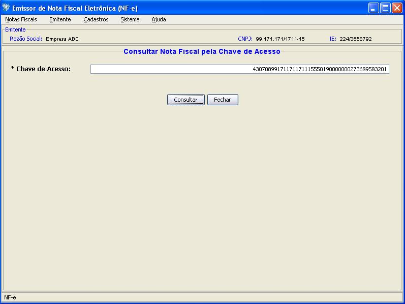
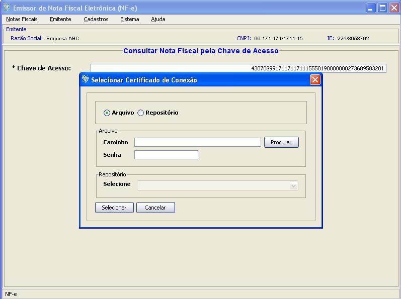
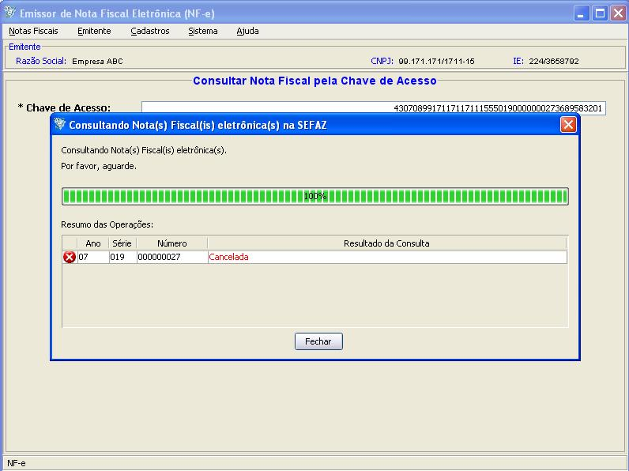

Software Emissor NF-e
Consulta de NF-e não
cadastrada no Software
A consulta de NF-e's não cadastradas no Software permite que
o usuário, através da Chave de Acesso, pesquise a
situação da nota na SEFAZ, verificando se
está autorizada, denegada ou cancelada.
Apenas NF-e's não cadastradas no Software poderão
ser consultadas desta maneira. Se for fornecido uma Chave de Acesso que
está cadastrado no Software, o aplicativo gerará
uma mensagem informando para realizar a consulta através da
opção Consulta
Situação SEFAZ do Gerenciamento de Notas.
O retorno desta consulta de NF-e não cadastrada
poderá ser:
- NF-e Autorizada: significando
que a NF-e encontra-se autorizada
- NF-e Denegada: a NF-e
encontra-se denegada
- NF-e Cancelada: a NF-e foi
canelada pelo emitente
- NF-e inexistente: a Chave de
Acesso fornecida não corresponde com nenhuma NF-e na SEFAZ.
IMPORTANTE: Conforme indicado na seção de Chave
de Acesso, este número de 44 dígitos
contém o código da UF. Baseado neste
código, o Software realizará a consulta de NF-e
não cadastrada na SEFAZ correspondente
àquela UF.
Pré-condição:
-Um emitente
deverá estar previamente iniciado.
- Acessar o menu: Notas Fiscais -> Consultar
NF-e não cadastrada no Software
- Digitar os 44
dígitos da Chave de Acesso da NF-e a ser pesquisada e clicar
em Consultar.
- Na janela de
seleção de Certificado Digital, escolher o
Arquivo (para
Certificado tipo A1), informando a senha, ou Repositório
(para Certificado tipo A3)
- Após a
seleção, clicar em Selecionar.
- O software Emissor NF-e
irá realizar a consulta, exibindo ao final se a
situação da NF-e com a chave de acesso informada
Tela da Consulta de Nota Fiscal eletrônica não cadastrada no Software:

Para realizar a consulta, deverá ser fornecido o certificado digital para a comunicação com a SEFAZ:

O Software informará a situação da
chave de acesso informada. No exemplo, a NF-e correspondente a Chave de
Acesso está cancelada:
